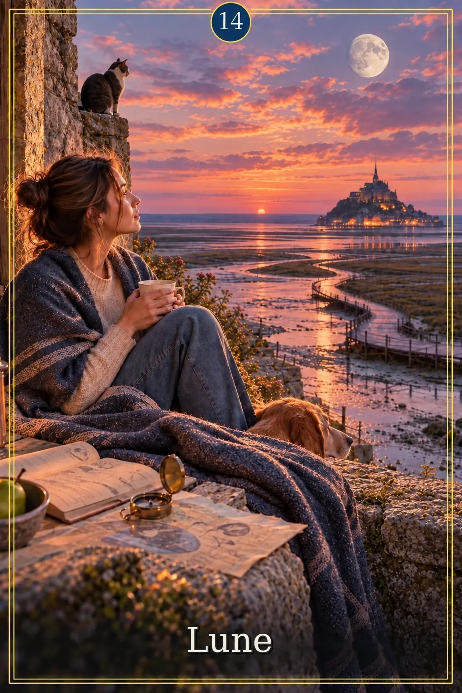
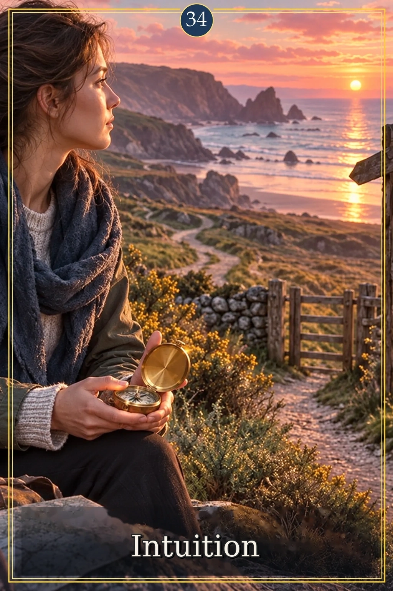
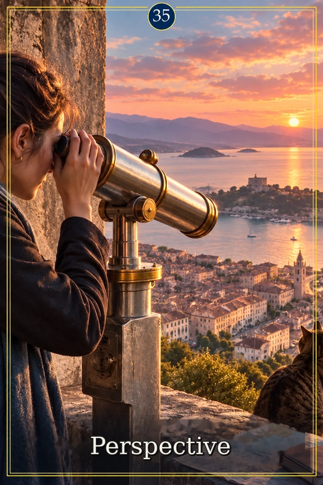
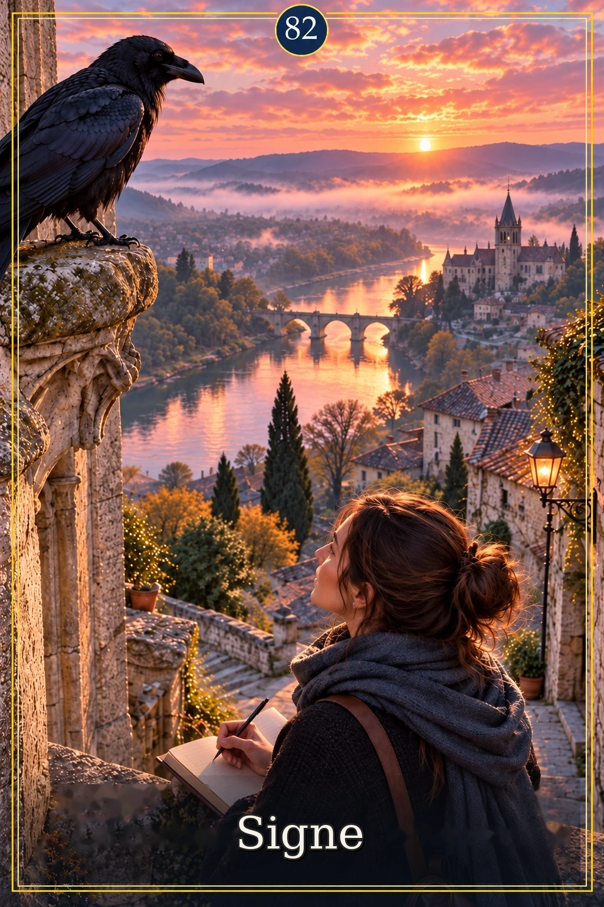
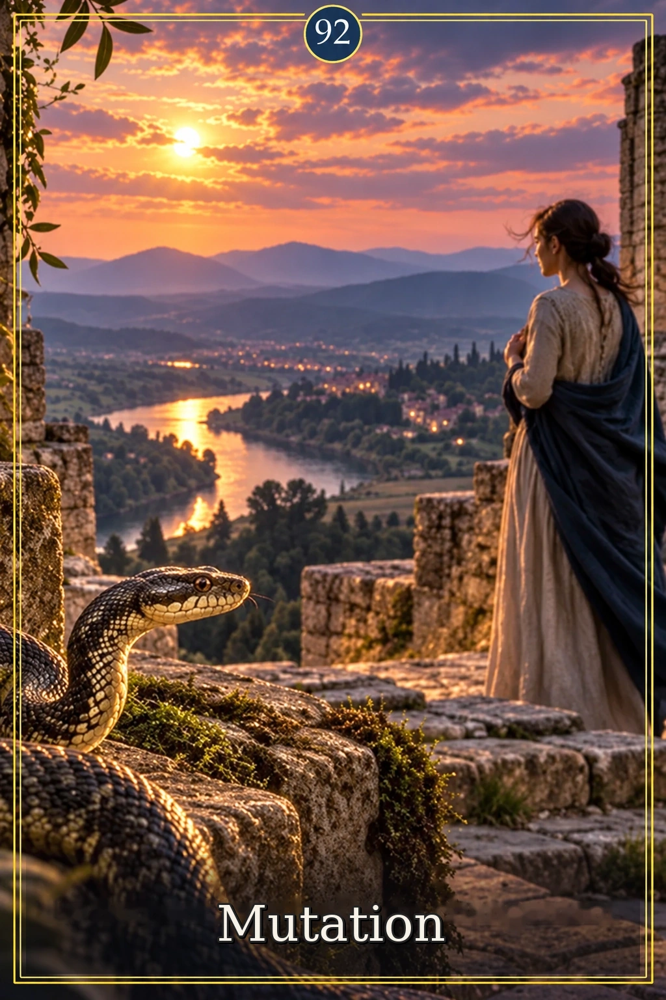
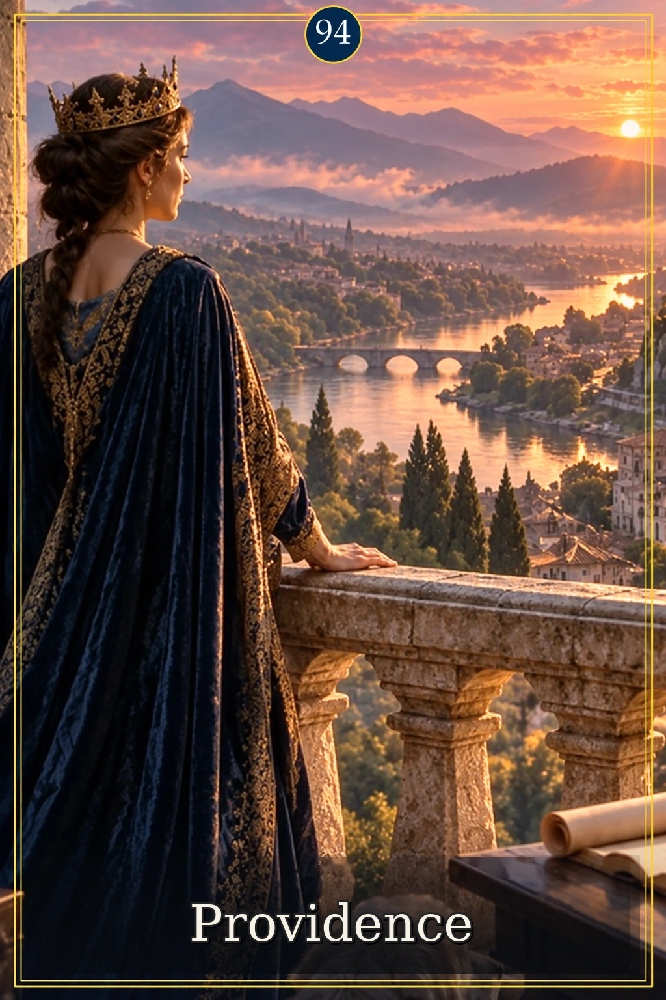

CRISTARIVA — harmonie rose orangéCRISTARIVA
Harmonie rose orangé · 23 cartes retouchées
Une lumière de coucher de soleil dans les ciels et les reflets.
13 septembre 2026
Ouvrir le site et les 130 cartes
11 · Incompatibilité

14 · La lune au seuil des marées
15 · Au rythme des marées
31 · La peur derrière le seuil

34 · La boussole intérieure

35 · Changer d’angle, voir l’inaperçu
36 · Le nœud au seuil de l’écluse
47 · Au seuil de la réconciliation
63 · Ancrage dans le réel
72 · Le labyrinthe des détours
74 · Épuisement
81 · Le lien des gestes réciproques

82 · Le corbeau, signe à observer
83 · Instabilité
89 · À la source du premier ressenti
90 · Retour

92 · Le Serpent, sentinelle du changement
93 · La graine en devenir

94 · Protection divine
95 · Fenêtre sur une possibilité
96 · Ami(e)
98 · Conjoint(e) / Partenaire amoureux
130 · Indéfini